| mesh | CD ↓ | acc ↓ | compl ↓ | P ↑ | R ↑ | F@10 ↑ | NC ↑ |
|---|---|---|---|---|---|---|---|
| input scan only (first station) | 0.0697 | 0.0122 | 0.1272 | 1.000 | 0.785 | 0.873 | 0.853 |
| Complete3D-v2 raw (scan + 8 images) | 0.0496 | 0.0567 | 0.0426 | 0.802 | 0.953 | 0.870 | 0.827 |
| Complete3D-v2 merged | 0.0407 | 0.0546 | 0.0269 | 0.792 | 0.976 | 0.873 | 0.864 |
The input scan is near-perfect where it exists (same laser data as the GT), but covers only part of the room. The merge keeps that accuracy on scanned surfaces and adds the prediction in the gaps: lowest CD, best completeness, recall and normals.
| mesh | observed (82% of GT) | unobserved | ||||||
|---|---|---|---|---|---|---|---|---|
| CD ↓ | P ↑ | R ↑ | F ↑ | CD ↓ | P ↑ | R ↑ | F ↑ | |
| input scan only (first station) | 0.0168 | 0.999 | 0.950 | 0.974 | — | — | 0.000 | — |
| Complete3D-v2 raw (scan + 8 images) | 0.0469 | 0.827 | 0.965 | 0.889 | 0.1256 | 0.309 | 0.920 | 0.450 |
| Complete3D-v2 merged | 0.0365 | 0.817 | 0.994 | 0.896 | 0.1255 | 0.308 | 0.918 | 0.449 |
Observed = within 15 cm of what the first station scanned; unobserved = laser-GT surface that station never saw. The input has no geometry in the unobserved region; the merged result recovers 0.918 of it (recall at 10 cm).
Merge: 72% of predicted faces kept on average; leakage 0.079 (mean share of the raw predicted surface lying in space the scan saw empty, removed).
Panels: input scan · Complete3D-v2 raw · merged (scan grey, generated orange) · GT. One camera per scene; walls cut at 60 % of the room height. Scenes: the two best merged results, two from the hardest 20, two typical.
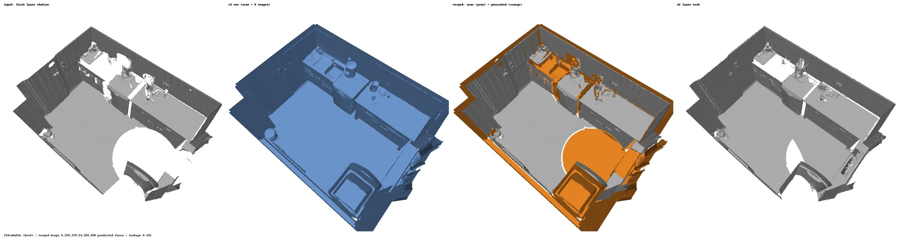
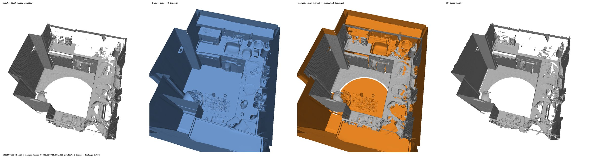
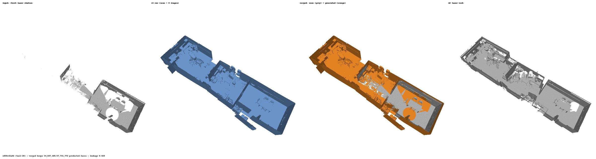
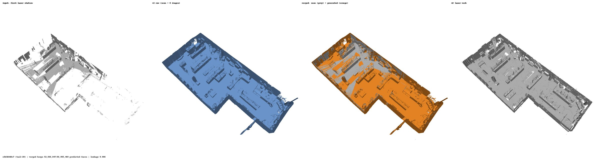
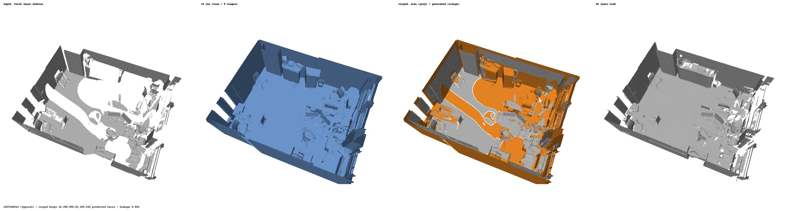
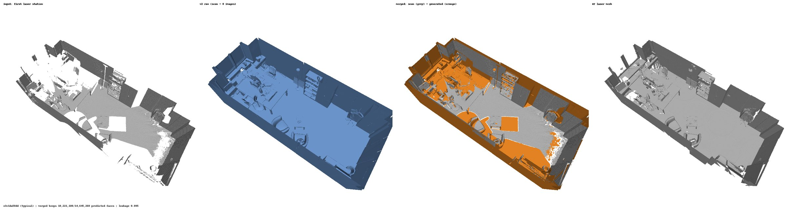
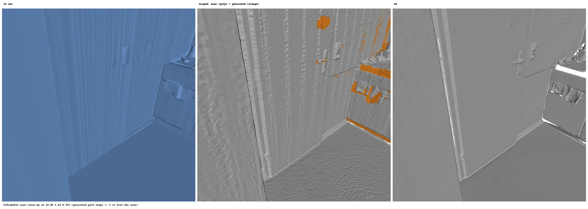
| mesh | CD ↓ | acc ↓ | compl ↓ | P ↑ | R ↑ | F@10 ↑ | NC ↑ |
|---|---|---|---|---|---|---|---|
| input scan only (first 50 % of stations) | 0.0267 | 0.0124 | 0.0410 | 0.999 | 0.924 | 0.959 | 0.907 |
| Complete3D-v2 raw (scan only, no images) | 0.0518 | 0.0573 | 0.0462 | 0.797 | 0.943 | 0.863 | 0.818 |
| Complete3D-v2 merged | 0.0389 | 0.0532 | 0.0246 | 0.793 | 0.982 | 0.876 | 0.878 |
With half the stations the scan already covers 94% of the GT, and here the merge does not beat the input scan on CD (0.0267 input vs 0.0389 merged). It does improve on the raw prediction (0.0518 → 0.0389) and completes the scan (completeness 0.0410 → 0.0246, recall 0.924 → 0.982), but the generated surface it adds is far less accurate than laser data (accuracy 0.0124 → 0.0532), which outweighs the completeness gained.
| mesh | observed (94% of GT) | unobserved | ||||||
|---|---|---|---|---|---|---|---|---|
| CD ↓ | P ↑ | R ↑ | F ↑ | CD ↓ | P ↑ | R ↑ | F ↑ | |
| input scan only (first 50 % of stations) | 0.0146 | 0.999 | 0.978 | 0.989 | — | — | 0.000 | — |
| Complete3D-v2 raw (scan only, no images) | 0.0489 | 0.809 | 0.955 | 0.875 | 0.1696 | 0.147 | 0.835 | 0.234 |
| Complete3D-v2 merged | 0.0360 | 0.805 | 0.996 | 0.890 | 0.1713 | 0.146 | 0.820 | 0.232 |
Observed = within 15 cm of what the first half of the stations scanned (94% of the GT); unobserved = the remaining 6%. The input has no geometry there; the merged result recovers 0.820 of it (raw 0.835; the merge removes a little generated surface there). On the observed part the scan stays far ahead (CD 0.0146 vs 0.0360 merged): the scan is kept verbatim, but generated faces in observed-region space the laser neither hit nor saw empty add error.
Merge: 63% of predicted faces kept on average; leakage 0.118 (mean share of the raw predicted surface lying in space the scan saw empty, removed).
Panels: input scan · Complete3D-v2 raw · merged (scan grey, generated orange) · GT. One camera per scene; walls cut at 60 % of the room height. Scenes: the same six as section 1 (picked on the 10 % results), for a side-by-side comparison.
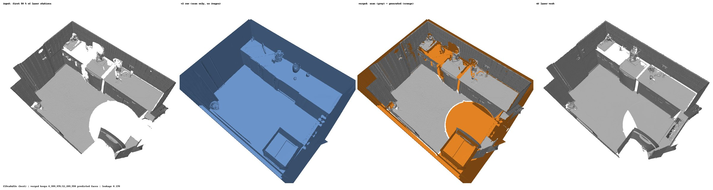
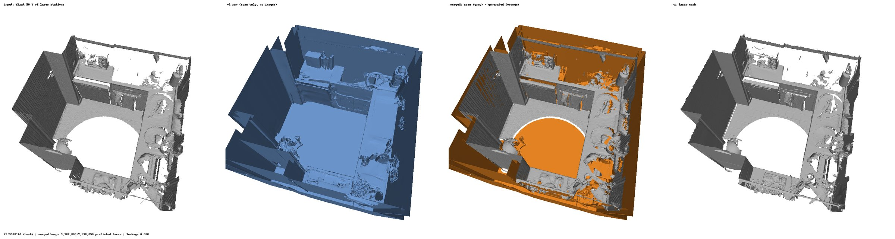
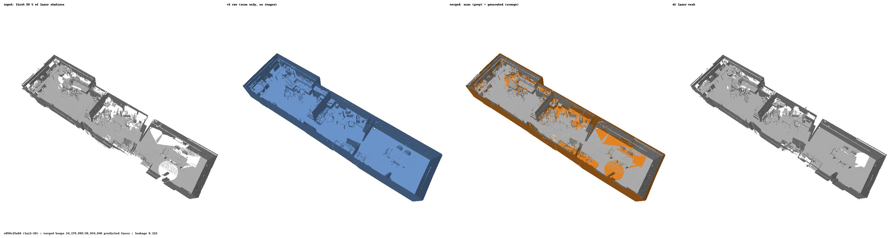
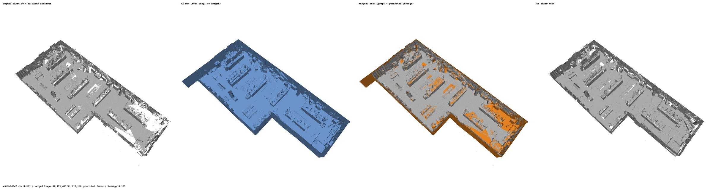
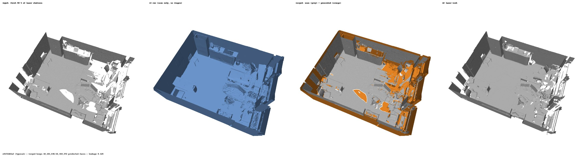
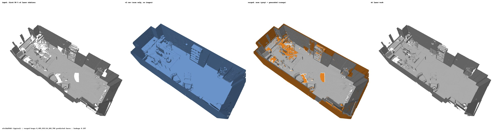
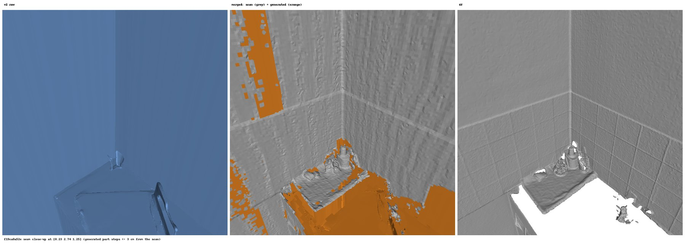